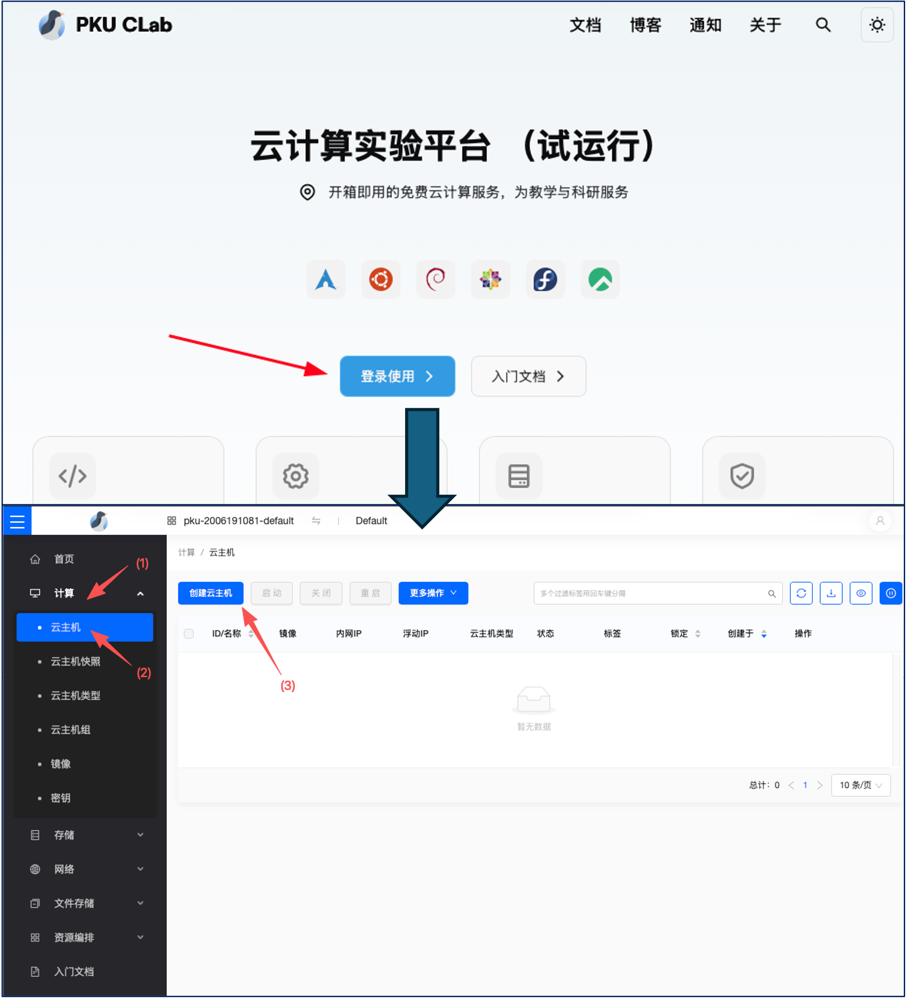
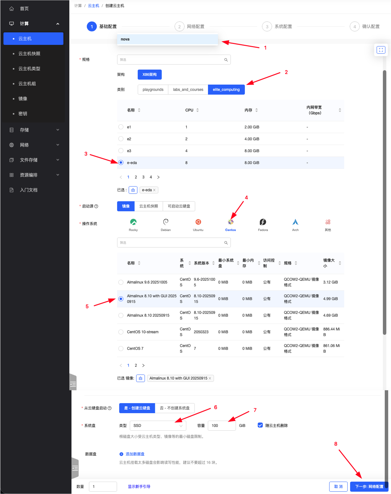
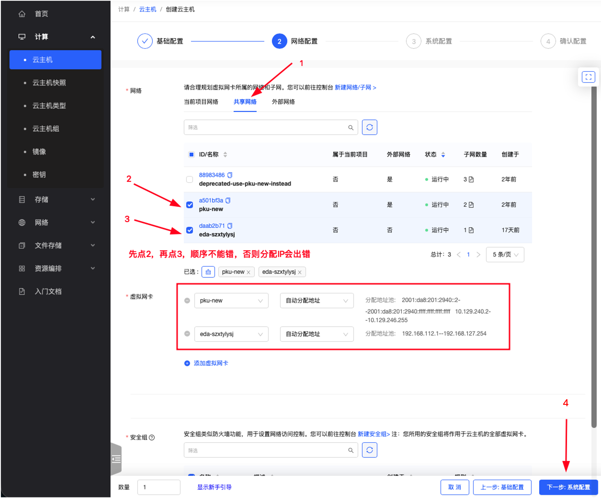
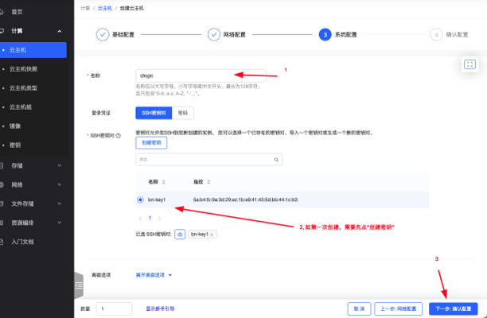

实验0、实验准备
Verilog HDL是一款起始于1989年左右的硬件描述语言，至今用于FPGA与ASIC开发；针对FPGA与ASIC开发业已形成了不同的代码编写仿真验证环境工具：
FPGA: Field-Programmable Gate Array
ASIC: Application-Specific Integrated Circuits
[思考] 都用Verilog HDL,FPGA与ASIC开发流程的区别是什么？
1-FPGA开发：Xilinx Vivado
Alinx提供的Vivado安装 https://disk.pku.edu.cn/link/AA131552BB0C3B4264B434C888AEA624F8
2-ASIC快速验证：Icarus Verilog+Gtkwave
安装教程：https://zhuanlan.zhihu.com/p/95081329
注意安装后如在cmd找不到，请将iverilog/bin文件件添加到环境变量中。
3-CLAB 中可以用商用的Synopsys VCS：
学校最近新开发了CLAB实验环境，具体分为：创建第一大步：虚拟主机->第二大步：通过shadowdesktop远程桌面使用vcs+wv进行verilog仿真（后续实验7还会用到dc_shell-t）
第一大步：创建CLAB虚拟机
首先你需要在北大校园网内。
本地客户端准备
为了连接到云主机，我们需要一个终端和 SSH 客户端。在 Windows 系统中，我们推荐安装 Windows Terminal （Windows11 应已自带）。在 macOS 和 Linux 系统中，我们推荐使用系统自带的终端。
然后，我们需要一个 SSH 密钥对。如果你还没有 SSH 密钥对，可以通过以下方式生成。如果你之前用密钥登录过其他机器，或者电脑的个人目录中已经有.ssh/id_rsa.pub或者.ssh/id_ed25519.pub文件，可以直接复制现有的.pub 文件到平台，会较为方便。
:::tip 小贴士
我们这里说的用户目录，在 Windows 下指的是 C:\Users\用户名，macOS 和 Linux 中指的是/home/用户名
:::
下列操作将在 用户目录下.ssh文件夹下生成一个名为 id_ed25519 的密钥对。id_ed25519.pub文件中的内容后续会用到 。请注意，这是密钥的默认位置，你可能已经有一个同名密钥在同一位置了。如果是这样，请直接使用那个密钥，千万不要重新创建！如果重新创建，会有提示，询问是否覆盖。请不要覆盖！
打开终端执行如下命令：
ssh-keygen -t ed25519
如果报错为找不到ssh-keygen命令，说明你的 Windows 系统版本较老，推荐更新至近期的 Windows 版本或者下载学生免费版Xshell使用。
一、 登录与准备
访问平台：在浏览器中打开北京大学 Clab 官方网站（https://clab.pku.edu.cn/）。
系统登录：点击首页的“登录使用”按钮，选择“校内统一登陆”完成身份认证并进入系统首页。
进入创建界面：在首页导航栏中点击“云主机”，随后点击“创建云主机”以进入配置向导。
创建课程主机

在左边栏选中计算-云主机，进入云主机列表，点击创建云主机
第一页：基础配置

请按以下参数依次完成云主机的基础运行环境设置：
架构：选择
x86架构。类别：选择
elite_computing。名称列表：选择
e-eda（配置为 8核 8GB）。启动源：选择“镜像”。
操作系统：选择
CentOS，并在具体版本中选中Almalinux 8.10 with GUI 20250915镜像。创建云硬盘：选择“是”，将其作为系统盘。
系统盘类型与容量：类型选择
SSD，容量设置为100GB。
第二页：网络配置

选择网络：首先勾选”共享网络“中的pku-new，然后勾选”当前项目网络“中的课程 EDA 课程网络，名称一般为eda-开头。 先点pku-new再点eda-的顺序不能颠倒，必须先勾选pku-new，再勾选课程网络。
第三页：系统配置

填写名称（可根据个人需求自定义命名），比如
dlogic选择密钥。如果之前没有添加过密钥，可以选择“创建密钥”，使用“导入密钥”选项，复制之前生成的
id_ed25519.pub文件中的内容，粘贴到“公钥”一栏，名称随意。如果之前已经添加过密钥，可以直接选择已有的密钥。
附：本地Windows电脑生成与获取 SSH 公钥方法
a. 按下
Win + R键，输入powershell并回车，打开命令行终端（Windows 系统）；按下Command (⌘) + 空格键打开聚焦搜索（Spotlight），输入Terminal或终端并回车打开命令行终端。（macos系统）b. 生成公钥：在终端中输入以下命令并执行。
ssh-keygen -t ed25519 _注：执行后连续按回车键即可；若提示公钥已存在，选择覆盖即可。_c. 获取公钥：在终端中输入以下命令查看公钥内容：
cat ~/.ssh/id_ed25519.pubd. 将终端输出完整密钥复制，粘贴至网页端的“导入 SSH 公钥”文本框中，并选中该公钥。
第四页：确认配置
仔细核对前三页的配置信息，确认无误后提交创建。
等待系统分配资源，云主机创建完成后，管理列表中将显示该主机的内网 IP 地址（以
10.开头），请记录该地址。
登录主机
通过主机的 IP 地址登录主机，进行后续操作，用户名是
almalinux。例如：
ssh almalinux@10.xx.xx.xx
这里10.xx.xx.xx应该是你自己的刚创建的虚拟主机IP地址。
如果是MAC、Linux系统可直接在terminal里运行，如果是Windows系统可用系统自带的Powershell或者第三方ssh连接软件Putty等。
执行 EDA 初始化：
成功登录云主机终端后，执行以下命令配置EDA工具：
sudo clabcli eda edadigital2026
获取桌面凭证：
执行:
clabcli desktop
（本命令不能加sudo）后，系统会提示输入您的学号。
输入学号并回车后，终端将输出三项关键信息：远程桌面网址（URL）、生成的账号以及密码。（请务必妥善保存这些信息）。
连接远程桌面
以上步骤仅需完成一次，之后每次从远程桌面登录云主机即可。
访问https://rdv2.lcpu.dev，使用刚才系统提供的账号密码登录，即可使用远程桌面。